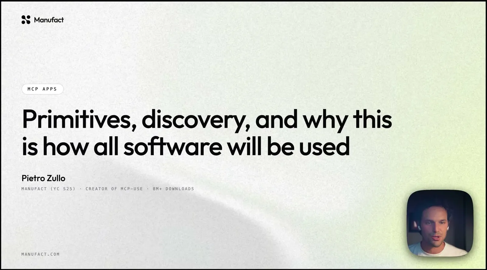
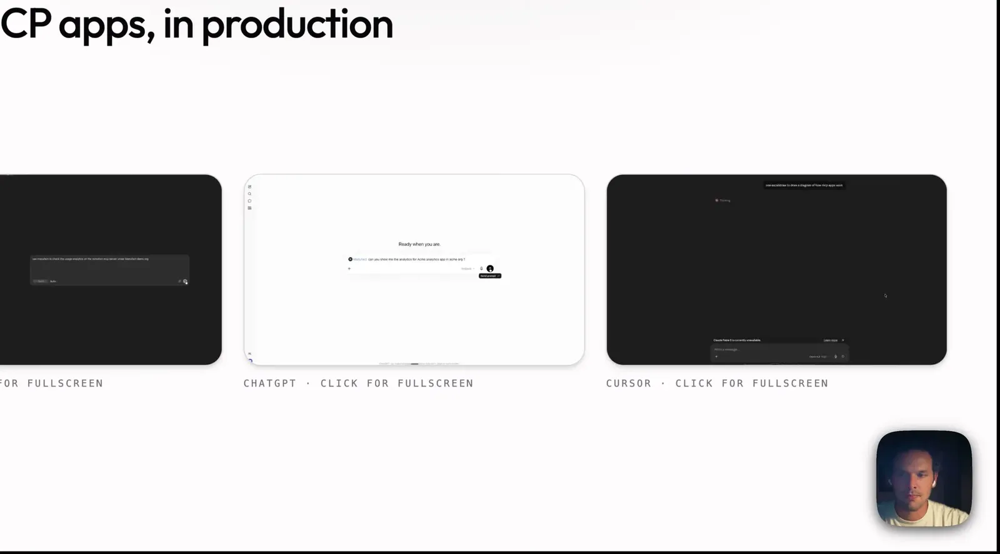
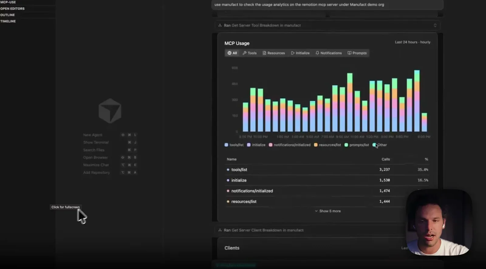
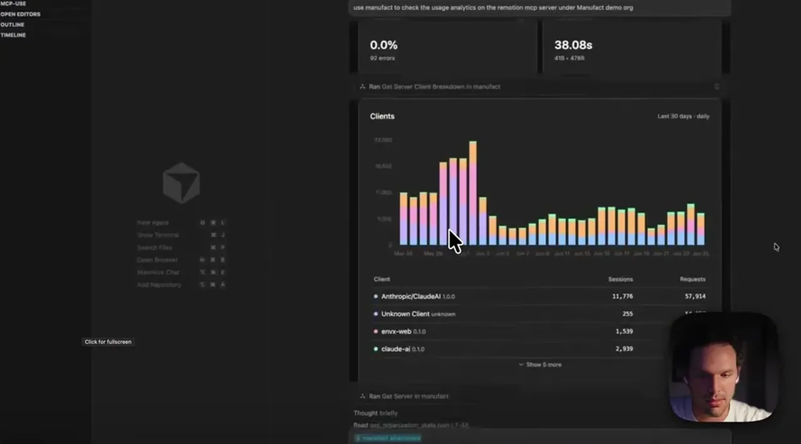
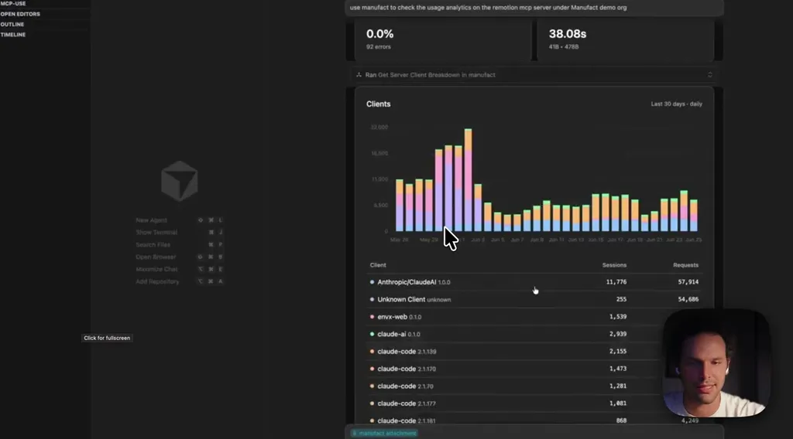
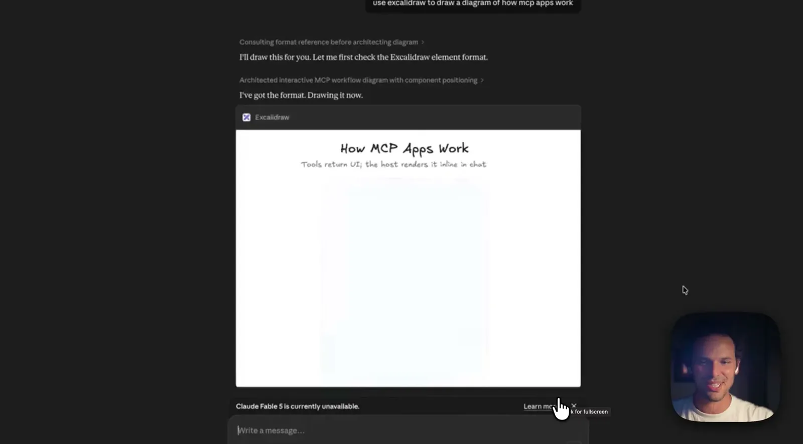
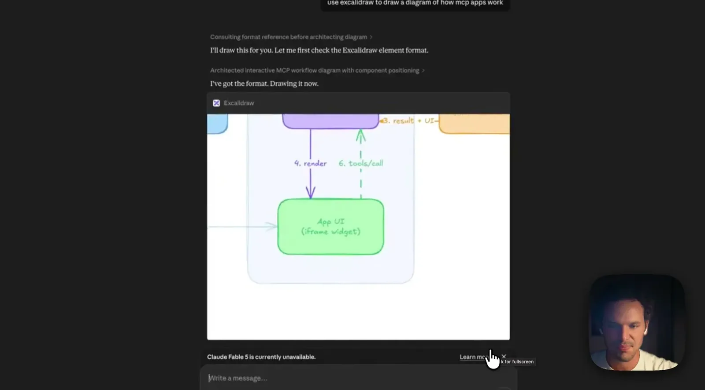
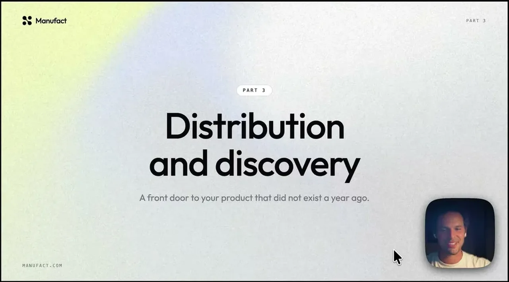

Explains the current MCP apps primitives (sandboxed-iframe widgets, set-state, send-follow-up-message, dual UI/model outputs for privacy) and, more importantly, the store submission and dynamic-discovery mechanics on Claude, ChatGPT, and...
This traces how a widget exchanges state and messages with the model inside one MCP app call, and how Claude falls back to searching the MCP registry when no tool is assigned; the registry search path is likely simplified from the actual matching logic (ours).
“We have 8 million plus downloads across our SDKs, and we have 10K stars on GitHub.”
said at 02:10“In January 2026, MCP UI I say converted to MCP apps. MCP apps is now the official extension of the Model Context Protocol that allows to return UI elements within MCP servers”
said at 04:12“the MCP server in this case doesn't return a JSON string again, but it returns a widget in a sandboxed iframe”
said at 06:15“the protocol mandates this state uh or this set state primitive where you can update the state of the model with respect to the UI components”
said at 08:20“Cloud will display the message in the chat input and tell the user like the user has the choice to send it or not. While OpenAI is a bit more integrated in this sense, it directly sends the model the message to the model”
said at 10:25“there is a structured output, which is sent into the widget itself. And there is an additional output that can be sent directly to the model”
said at 14:03“of course, all the different versions of Claude and ChatGPT uh so both Claude Co-work, Claude Desktop support MCP app, ChatGPT and Codex support MCP app”
said at 18:13“when Cloud needs is like assigned a task that doesn't have a specific tool to do, it will actually search in the MCP registry for the right connector to do the task”
said at 25:00“Cloud does this today and [clears throat] ChatGPT is expected to do this pretty soon.”
said at 26:02“just a few days ago, Paul Graham, uh the founder of Y Combinator, said, "Uh AI apps are the new browsers."”
said at 27:35Dynamic discovery -- an agent auto-selecting your connector without the user ever searching for it -- is the detail most likely to be underrated; it turns MCP store presence into an acquisition channel comparable to SEO for the agentic era, but only Claude does it today so the payoff is still speculative for most builders (ours).








| Stance | Claim | t |
|---|---|---|
| asserts | Manufact's open-source MCPUI SDKs have over 8 million downloads and 10K GitHub stars. | 02:10 |
| asserts | In January 2026, MCP UI converted into MCP apps, now the official Model Context Protocol extension for returning UI elements in servers. | 04:12 |
| asserts | MCP apps have the server return a widget in a sandboxed iframe instead of a JSON string. | 06:15 |
| asserts | The MCP apps protocol mandates a set-state primitive that lets the widget update what the model knows about UI component state. | 08:20 |
| asserts | Claude displays a widget's follow-up message in the chat input for the user to choose to send, while OpenAI sends it directly to the model. | 10:25 |
| asserts | MCP tools can return separate outputs: a structured output sent to the widget for the user, and an additional output sent directly to the model. | 14:03 |
| asserts | Claude Co-work, Claude Desktop, ChatGPT, Codex, and Cursor all support MCP apps. | 18:13 |
| asserts | Claude performs dynamic discovery, searching the MCP registry for the right connector when assigned a task with no specific tool available. | 25:00 |
| predicts | ChatGPT is expected to add dynamic discovery of MCP connectors soon, following Claude. | 26:02 |
| asserts | The speaker cites Paul Graham's statement that AI apps are the new browsers as a framing for the importance of MCP store presence. | 27:35 |
Machine-readable copy embedded in this page (script#ontology) and in the corpus ontology.